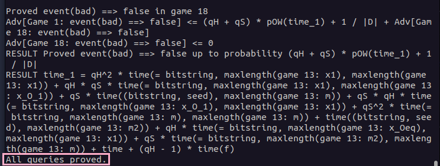
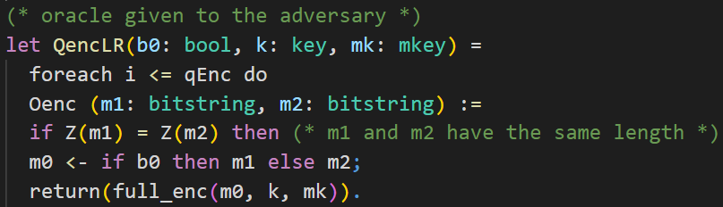
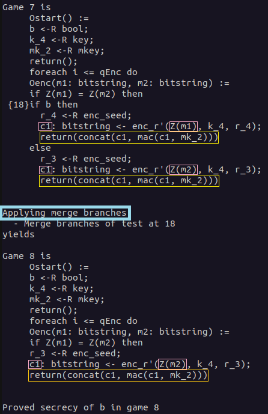

❓ Motivation
What is CryptoVerif?
formalizes sequence of games (game hopping)
computes bound on advantage (exact security)
computational model
specialized probabilistic process calculus language (inspired by pi calculus https://en.wikipedia.org/wiki/%CE%A0-calculus)
interactive mode
CryptoVerif
is a tool for proving cryptographic protocols automatically in the computational model. It formalizes the
sequence of games
proving technique (often also called game hopping). CryptoVerif computes a bound on the advantage of an adversary. It is written in a specialized probabilistic process calculus language inspired by
pi-calculus.
CryptoVerif has an automatic mode, as well as an interactive mode.
Why you should learn about it
CryptoVerif can prove secrecy, authentication, and indistinguishability properties. CryptoVerif cannot find attacks BUT failed proof may help you to find such an attack (on a protocol you considered and "proofed" to be secure)
üîß Installation
ℹ️ This tutorial only shows how to install CryptoVerif and its requirements on Ubuntu.
It is also possible to run CryptoVerif under other Linux distributions and Windows.
For information take a look at the README file in the downloaded CryptoVerif folder.
Download CryptoVerif
CryptoVerif can be downloaded here. ​
- Click at the "Source" download link
- Scroll to the very bottom of the page and accept the terms
- Accept again in the popup window
- Download cryptoverif2.06.tar.gz to a location of your choosing
Install OCaml (4.03 or higher)
CryptoVerif requires OCaml version 4.03 or higher to be installed. The easiest way to install OCaml is to use its package manager opam.
add-apt-repository ppa:avsm/ppa
apt update
apt install opam
For CryptoVerif to work it is important to install the OCaml compiler as well.
After the execution of the first command you may be asked if you want to modify a file ~/.profile. You can answer with the default "N".
When asked if you want to add a hook, you can answer with the default "y".
opam init
eval $(opam env)
Check if the installation was successful with the following command.
ocaml -version
Install CryptoVerif
First, you need to uncompress the previously downloaded cryptoverif2.06.tar.gz.
tar -xzf cryptoverif.2.06.tar.gz
Build the programs using the following commands.
cd cryptoverif2.06
./build
Further, CryptoVerif requires the OCaml cryptographic library cryptokit to be installed.
opam install cryptokit
Test for successful installation
Let´s try to run CryptoVerif on an example protocol. You need to be in the directory cryptoverif2.06 where the executable cryptoverif is located, before executing the following command.
./cryptoverif examples/basic/OtwayRees.pcv
Your result should end like this:

ℹ️ Having problems with the installation? Take a look at the README file in the downloaded CryptoVerif folder.
üìö First Proof
In this chapter we will have a look at a first proof using CryptoVerif. You will be guided to gather an understanding of how to work with CryptoVerif.
We will consider the Enc-then-Mac construction. Our goal is to show that Enc-then-Mac is IND-CPA secure, assuming the symmetric encryption is IND-CPA secure and the MAC is SUF-CMA secure.
Enc-then-Mac

The Enc-then-Mac construction works as follows.
- Encrypt the plaintext resulting in a ciphertext.
- Compute the Mac over this ciphertext.
- Concatenate the ciphertext and this Mac.
You can see a visualization of this construction on the right-hand side.
Input file
In this section we will build the input file for the proof together. CryptoVerif takes this file and tries to prove the queries we defined using the sequence of games technique.
ℹ️ Note that we will not strictly walk through every line of code from the top to the bottom. We will skip some lines for didactic reasons and explain them at the appropriate places.
Cryptographic assumptions
We start with the cryptographic assumptions we make for the cryptographic primitives used. In our case this is that the symmetric encryption is IND-CPA secure and the MAC is SUF-CMA secure.
CryptoVerif provides a library containing many standard cryptographic assumptions you can use (see docs/manual.pdf, Chapter 6). But you can also create your own assumptions.
You can see the code snippets for telling CryptoVerif that enc is IND-CPA secure and mac is SUF-CMA secure in the following.

talk about where to put "."
Here the already in the default library default.ocvl defined macros IND_CPA_sym_enc and SUF_CMA_det_mac are expanded. For a better understanding we will discuss the technical side with the example of the IND_CPA_sym_enc marco.
First, let us inspect the meaning of the parameters of this macro.
- type of keys
- type of plaintexts
- type of ciphertexts
- encryption function
- decryption function
- function to inject the type bitstring to the type bitstringbot (The decryption returns either a bitstring (plaintext) or bottom (when the decryption fails). The type bitstringbot contains all bitstrings and bottom and is the return type of the decryption function.)
- function from bitstring to bitstring (This function models the leakage of the encryption. We usually interpret this as the leakage of the length of the plaintext.)
- probability of breaking the IND-CPA property
The functions enc, dec, injbot and Z are declared by the macro. It is important that they are not declared anywhere else. They can only be used after the macro has been expanded.
The types of keys, plaintexts, ciphertexts and the probability Penc must be declared before expanding the macro.
As you can see in the code snippet, the probability Penc is declared right before expanding the macro.
The types of plaintexts and ciphertexts are bitstring, a predefined type.
The type of keys is declared at the top of the input file, depicted in the following code snippet. There are also the type declarations for arguments for the macro SUF_CMA_det_mac.
The types are annotated with the lable [fixed] meaning that, for example, an encryption key is a bitstring of fixed length. Note that CryptoVerif does not need to know the specific length. Similar as it does not need to know the specific implementation of the symmetric encryption scheme or the MAC.
Note that it is possible to make an exact specification of the length to CryptoVerif.
explain technical side: e.g. IND-CPA replaces plaintexts with Z(m1),Z(m2) (same bitstring)
talk again that Z models leakage of encryption and we interpret is as the leakage of the length of the plaintext
Now we want to gain a better understanding of how CryptoVerif is doing game transformations. Once again, we will take the IND-CPA assumption as an example.
Let´s have a look at a code snippet from the macro IND_CPA_sym_enc in the default library default.ocvl depicted below.

talk about IND-CPA transformation shown above explain how CryptoVerif does cryptographic transformations (requirements that need to be satisfied)
Definition Enc-then-Mac
letfun full_enc()
letfun requires implementation vs fun does not
Further, we need to define how Enc-then-Mac works. Otherwise CryptoVerif would not know what the construction we try to prove looks like.
For the definition of the Enc-then-Mac construction we will need a function for concatenation. We are not interested in the concrete implementation of this function.
Therefore, we only declare the function using the keyword fun.
The keyword letfun is used when defining a function, i.e., giving a concrete implementation. We will use this one for the definition of the Enc-then-Mac encryption.
The declaration of the concatenation function is shown in the following.

talk about fun, types and [data]
Now that we talked about the concatenation function, we have everything we need to move on to the Enc-then-Mac construction. The definition of the Enc-then-Mac encryption is depicted in the following.

As we want to define the exact behaviour for the Enc-then-Mac encryption we use letfun for the definition of the function full_enc.
TODO: talk about oracles ()= and where to put ";" and "."
sequential execution with ";"
The function has three parameters that are needed.
First, there is the plaintext m of type bitstring. In CryptoVerif we consider plain- and ciphertexts as bitstrings. This means we consider cryptographic primitives (e.g. encryption) as mappings from bitstrings to bitstrings.
Further there are the encryption key k of type key, and the MAC key mk of type mkey.
We will use the encryption function enc declared inside of the macro IND_CPA_sym_enc to compute the encryption of the plaintext m under the encryption key k. This ciphertext is then stored inside the variable c1.
Next, we concatenate the ciphertext c1 with the MAC of the ciphertext c1 under the MAC key mk. This concatenation is the result of our Enc-then-Mac encryption function full_enc.
Initial game to prove (including oracles)
Now we want to construct the initial game CryptoVerif should try to proof using the sequence of games. In our example this is the IND-CPA game. Note that for many games there are oracles the adversary can query. Here, an encryption oracle from the IND-CPA game is required. We will start with this oracle before proceeding with the initial game.
QencLR (oracle) difference = and := adversary makes calls to the oracle(s) (interaction)
The code of the encryption oracle is depicted below.

talk about keyword let and oracles
talk about equivalency of IND-CPA and LoR-CPA
The oracle is implemented as a left-or-right oracle. That means that the oracle receives two plaintexts in each query made by the adversary and always encrypts the left plaintext or always encrypts the right plaintext depending on the value of b.
talk about replication (foreach i <= qEnc do)
param qEnc. at top of file (no real number) (just put into adversary advantage) if branches cannot be merged

OStart (first game)
talk about queries (query secret b.)
talk about run
no "." because end of file talk about main process and sub processes


Execute
The input file is now ready and we can execute CryptoVerif to let it try proof our query.
You can find the input file enc-then-MAC-IND-CPA.ocv
here.
When in the same directory as the executable cryptoverif you can run CryptoVerif on our created input file using the following command.
./cryptoverif ./path/enc-then-MAC-IND-CPA.ocv
explain output of CryptoVerif
show IND-CPA game hop. replacement of x with Z(x) as explained before
Show IND-CPA game hop

emphasize last game hop as preparation for the first challenge
show Merging game hop
Show Merging game hop

explain advantage (put together through games e.g. Penc from ind_cpa hop)
add TeX output with -tex
mkdir tex
./cryptoverif -tex ./tex/enc-then-MAC-IND-CPA ./path/enc-then-MAC-IND-CPA.ocv
You can view the PDF with a TeX editor of your choice (e.g.
TeXstudio).
Alternatively, you can simply use an
Online LaTeX Editor
to display the PDF without any installation required.
üí° Challenges
Enc-and-Mac
Try to prove Enc-and-Mac is IND-CPA (which it is NOT).
Try to understand why proof fails in CryptoVerif.
In the first challenge we will consider the Enc-and-Mac construction. The assumptions on the cryptographic primitives are the same as in the chapter First Proof. The symmetric encryption is IND-CPA secure and the MAC is SUF-CMA secure.
Try to prove that Enc-and-Mac is IND-CPA secure using CryptoVerif. As you may already know that cannot be proven as attacks exist.
In this challenge you should inspect CryptoVerif´s output and understand why the sequence of games failed.
Note that CryptoVerif cannot find attacks. However, you should use CryptoVerif´s output to derive a concrete attack on the Enc-and-Mac construction.

The Enc-and-Mac construction works as follows.
- Encrypt the plaintext resulting in a ciphertext.
- Compute the Mac over the plaintext.
- Concatenate the ciphertext and this Mac.
You can see a visualization of this construction on the right-hand side.
❓ Don´t know how to proceed? Click here.
The input file is almost the same as enc-then-MAC-IND-CPA.ocv discussed in the chapter First Proof.
For this task you need to rewrite the defintion of full_enc to match Enc-and-Mac instead of Enc-then-Mac.
Show solution
Solution: Definition Enc-and-Mac
Explanation: How the proof fails
Insert Explanation how proof fails (Merge not possible because mac(m1,...) and mac(m2,...) instead of same value)
Solution: Derive attack on Enc-and-Mac
Use failed CryptoVerif game to derive attack


Enc-then-Mac IND-CCA2
Prove Enc-then-Mac is IND-CCA2
In the second challenge we will consider the
Enc-then-Mac
construction again. The assumptions on the cryptographic primitives are the same as in the chapter First Proof. The symmetric encryption is IND-CPA secure and the MAC is SUF-CMA secure.
Your goal is to prove that Enc-then-Mac is then
IND-CCA2
secure using CryptoVerif.
You can orientate yourself on the input file enc-then-MAC-IND-CPA.ocv presented in the chapter First Proof. You may require to have a look at hints 4 and 5 as they contain CryptoVerif syntax not captured by this tutorial beforehand.
❓ Need any hints? Click here.
üí° Hint 1
Consider the differences between the IND-CPA game and the IND-CCA2 game. What is new?
üí° Hint 2
The IND-CCA2 game requires a decryption oracle.
Did you tell CryptoVerif how the Enc-then-Mac decryption looks like?Solution: Decryption Enc-then-Mac
üí° Hint 3
The IND-CCA2 game requires a decryption oracle.
Did you add the decryption oracle? You can orientate yourself on the encryption oracle presented in the chapter First Proof.
Note that you should not implement the decryption oracle as a left-or-right oracle.üí° Hint 4
Did you remember to exclude how any adversary can trivially win the IND-CCA2 game?
You may use tables in CryptoVerif to do so. Check the syntax of tables below.CryptoVerif Syntax: Tables
üí° Hint 5
In the IND-CCA2 game the adversary can access the encryption oracle and the decryption oracle. The adversary can choose the order he makes requests to the oracles but in CryptoVerif only one oracle can be called at a time.
Check the syntax of parallel composition of oracles below.CryptoVerif Syntax: Parallel composition of oracles


Solution:
- Add full_dec()
- Add Dec oracle
- modify Enc and Dec oracle to exclude trivial win (using table of ciphertexts)
- run oracles parallel composition
Show solution
Solution: Decryption Enc-then-Mac
Explain solution

Solution: Enc and Dec oracle (exclude trivial win)


Solution: Initial Game

Result ala Convince Yourself (Look at Last Game and understand why independent from b)
Show last game

üìù Self-Study
have a look at signedDH yourself
talk about queries (keyA)
talk about events
talk about query using events (exclude malicious accept) talk about manual mode (guided)